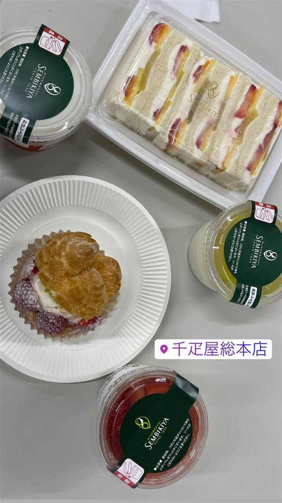
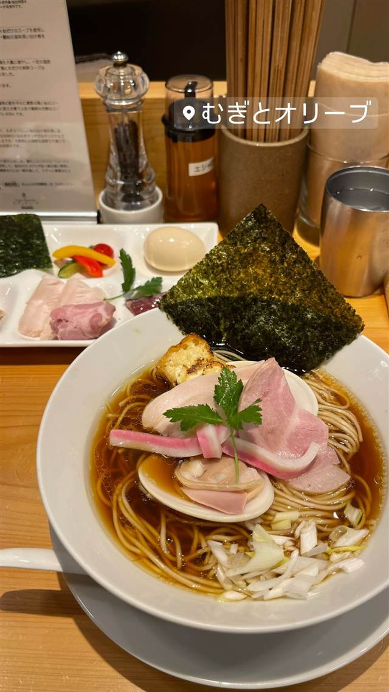
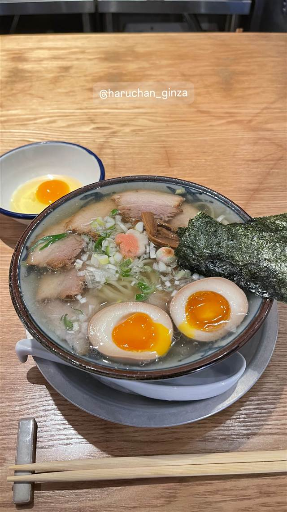

銀座天龍 本店
元大相撲力士が始めた、ニンニク不使用の12cm大判餃子
銀座天龍
WHY GO
ニンニクを使わず白菜と豚肉だけで作る12cmの大判餃子を創業以来守る
銀座天龍は、満州で相撲普及に努めた元力士・天竜三郎が1949年に開いた老舗中華料理店。ニンニクを使わず白菜・豚モモ肉・長ねぎだけで作る一枚12cmの大判餃子が名物で、「ミシュランガイド東京」ビブグルマンにも選出されている。
TRIVIA
豆知識
- 創業者は元大相撲力士で、満州で相撲を広めた後に帰国して中華料理店を開いた
- 餃子はニンニク不使用でにおいを気にせず食べられる
- 12cmの大きさから通称「バナナ餃子」とも呼ばれる
REVIEWS
世間の評判
3.66食べログ
バナナ大の名物ジャンボ餃子
- バナナほど大きい名物ジャンボ餃子を評価する声が多い
- 行列でも回転が早く待ち時間が短いという声が多い
- 週末は並ぶことが多いという声がある
- 全体としては及第点という厳しい声もある
食べログ 口コミ4339件
| 創業 | 1949年（昭和24年）創業 |
|---|---|
| 系譜 | 創業者は元大相撲力士の天竜三郎。出羽海部屋所属で最高位は東関脇、満州で相撲普及に努めた後に帰国し中華料理店を開いたのが始まり。 |
| 看板 | 一枚12cmにもなる大判の焼き餃子（通称「バナナ餃子」）。 |
| こだわり | 産地直送の白菜・豚モモ肉・長ねぎといったシンプルな具材のみを使い、ニンニクなど香味野菜を一切使わないため、翌日ににおいが残りにくい製法を創業以来守り続けている。 |
| 掲載・評価 | 「ミシュランガイド東京2016」でビブグルマンに選出。東京三大ジャンボ餃子の一つに数えられる。 |
| どこから | 都心 |
| 行くなら | 行列 |
| 予算 | 昼 ¥1,000～¥1,999 夜 ¥3,000～¥3,999 |
| 場所 | 銀座一丁目 東京都中央区銀座 |
| メモ | ランチタイムは連日行列ができる人気店。 |
食べたもの：餃子
NEARBY
近い店・同じ系統の店
-
 天ぷら・天丼 銀座
銀座ハゲ天 銀座本店
頭髪の薄かった初代店主にちなむ店名、薄衣とごま油で揚げる天丼
昼 ¥3,000～¥3,999 夜 ¥6,000～¥7,999
天ぷら・天丼 銀座
銀座ハゲ天 銀座本店
頭髪の薄かった初代店主にちなむ店名、薄衣とごま油で揚げる天丼
昼 ¥3,000～¥3,999 夜 ¥6,000～¥7,999
-
 ケーキ・パフェ 銀座
珈琲専門店 三十間 銀座本店
地下の隠れ家で味わうふわふわチーズケーキとコーヒー
昼 ¥1,000～¥1,999 夜 ¥1,000～¥1,999
ケーキ・パフェ 銀座
珈琲専門店 三十間 銀座本店
地下の隠れ家で味わうふわふわチーズケーキとコーヒー
昼 ¥1,000～¥1,999 夜 ¥1,000～¥1,999
-
 アイス・ジェラート 銀座
ヴェンキ 銀座店（Venchi）
1878年創業トリノの老舗、量り売りのジャンドゥイオット
昼 ～¥999 夜 ～¥999
アイス・ジェラート 銀座
ヴェンキ 銀座店（Venchi）
1878年創業トリノの老舗、量り売りのジャンドゥイオット
昼 ～¥999 夜 ～¥999
-

スイーツ 銀座 千疋屋総本店 -

醤油・中華そば 銀座・東銀座 むぎとオリーブ 銀座本店 桑名産蛤だしが香る「蛤SOBA」、ビブグルマン選出 昼 ¥1,000～¥1,999 夜 ¥1,000～¥1,999 -

醤油・中華そば 東銀座駅 銀座はるちゃんラーメン 新橋の姉妹店、ビブグルマン複数年掲載の中華そば 昼 ¥1,000～¥1,999 夜 ¥1,000～¥1,999